25 Sept 2019
Crackme Challenge #1 - 7eRoM 1st One Challenge
7eRoM - 1st one challenge
Welcome to my first blog post. Today, we'll be attempting to crack 7eRoM's Crackme called "1st one challenge".
When executing the app, you are prompted for a password:
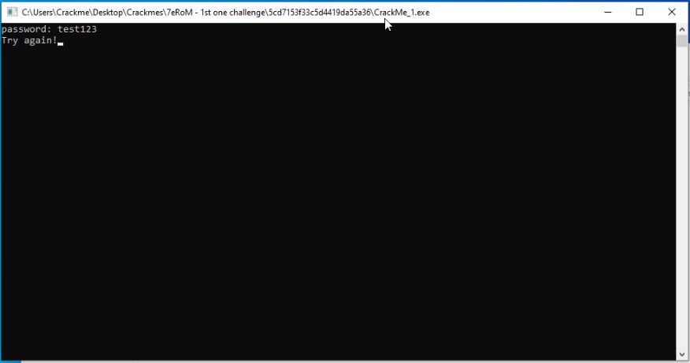
The app exits afterwards.
If we debug the app in Ollydbg, we get a slightly different output after entering in the same password:
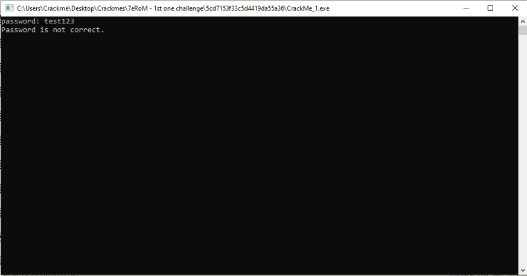
Finding the main function
When viewing this app in Ollydbg, we are greeted with the C runtime initialization (CRT) system. According to https://www.embecosm.com/appnotes/ean9/html/ch05s02.html, a few initialization steps need to be taken before calling the main function.
We can identify common calls made by the CRT system in order to get closer to the main function. These calls include kernel32.GetCommandLineX and kernel32.GetEnvironmentStringsX.
In the main CPU window, right click anywhere and hover over 'Search for' and select 'All intermodular calls'. Click on the Destination tab to sort the library calls by name. We will first take a look at kernel32.GetEnvironmentStringsW and set a breakpoint on it (F2).
When starting the app, we hit the breakpoint. We can single step from here and shortly thereafter, the CMD window asking for the password pops up. We can backtrack from here to ascertain this as our main function.
If we view the above in IDA (graph view makes it easier for us to find the main function), we can create a chart that shows us how many calls were made from the main function:
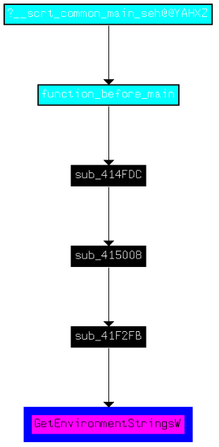
It might be hard to see, but I renamed the function in cyan blue to "function_before_main".
Another way we can find our way to the main function is utilizing the referenced strings. We find some interesting ones at that:
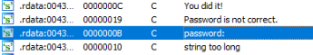
We can double click the text in Ollydbg to find where it is used in memory.
Finding the correct password
When we call into the main function, we can see our "password:" string being pushed onto the stack at 0x403BA0. Before pushing the string, a jump condition is met. If the jump condition is equal to 0, we jump over our string.
We can decompile this function with Ghidra to reveal two outcomes based on this jump condition:
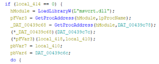
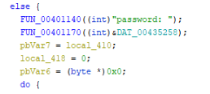
We do not take the jump, so we fall through to the else clause. We'll take a look at this path first.
It appears some heavy math is involved in order to get the correct password:
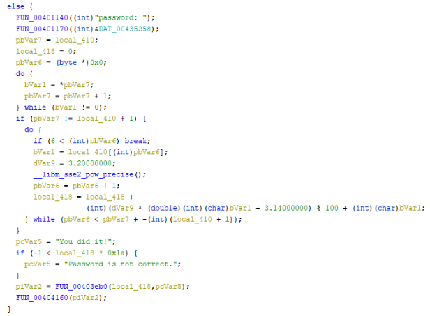
We can see our "Password is not correct" string. I was not able to find a way to get the correct password when taking this route unless I patch the instructions, which makes it too easy.
How do we take the other path? We can obviously patch the jump condition instruction, but let's see what it's checking against first.
According to the screenshot below, we can see offset 0x18 in the FS segment register is being accessed. Offset 0x30 is accessed from there, and another offset of 0x2. This is moved into EDX and is the basis of our jump condition.
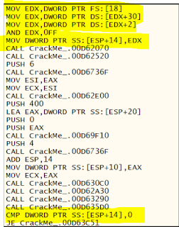
According to https://en.wikipedia.org/wiki/Win32_Thread_Information_Block, offset 0x18 is the linear address of the thread environment block (TEB) and offset 0x30 is the linear address of the process environment block (PEB). Offset 0x2 from the PEB points to an interesting discovery:
struct _PEB {
0x000 BYTE InheritedAddressSpace;
0x001 BYTE ReadImageFileExecOptions;
0x002 BYTE BeingDebugged;The app is essentially detecting that we're using a debugger. In order to patch this, we can change the instruction from AND EDX,0FF to MOV EDX,0
This way, the result from calling BeingDebugged is false, now we can move onto discovering the password.
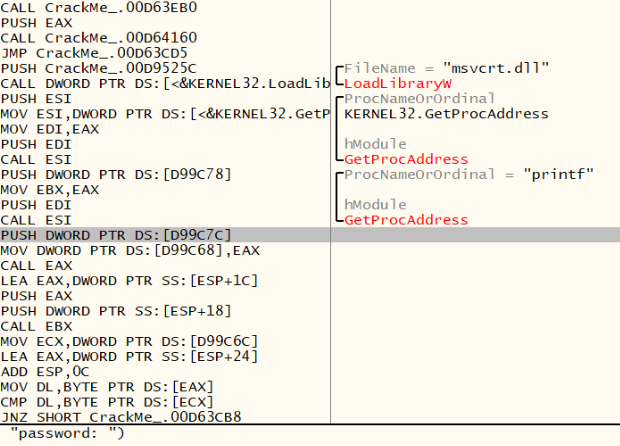
We see now that the app is using LoadLibraryA and GetProcAddress to use the printf function to print "password: " to the console. I assume it's done this way as a means to trick the reverser into believing the other path was the way to go.
Right after we enter in our password, we can see something interesting in memory:
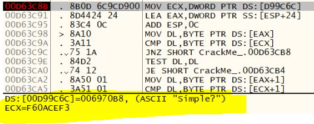
Is that the password we're looking for? Jumping back into IDA, at address 0x403C98 the first byte of our password is compared with the first byte of "Simple?" ("S"). We will patch the instructions in Ollydbg in order to make the app think the comparisons are correct. After that, the next byte from each password are compared. Same as again, we'll patch the jump instruction to see where it leads us.
The first two bytes are taken off from each password and the now first bytes are being compared against each other.
After stepping through this function and making sure each check is correct, we get the following message:
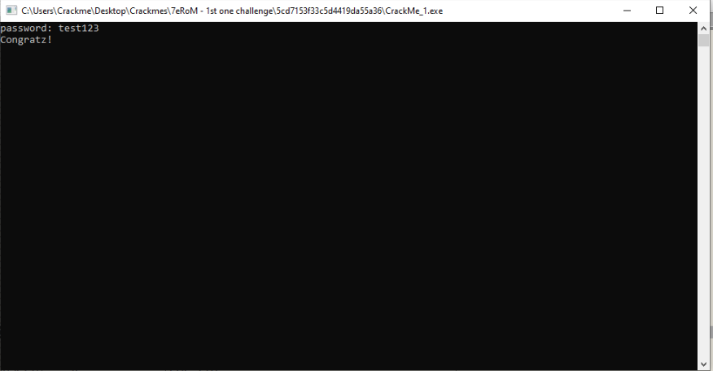
I think we know what the password is. Let's execute the Crackme without running the debugger and give it a go:
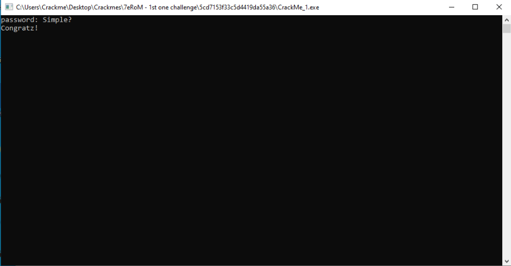